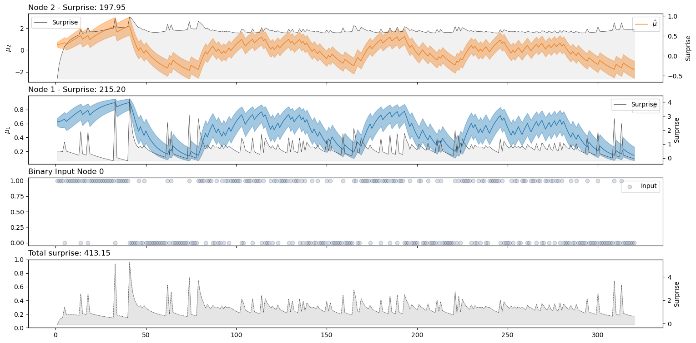

The multilevel, generalized and nodalized Hierarchical Gaussian Filter for predictive coding#
pyhgf is a Python library that implements the generalized, nodalized and multilevel Hierarchical Gaussian Filters for predictive coding written on top of JAX. The library can create and manipulate graph neural networks that perform beliefs update throught the diffusion of precision-weighted prediction errors under new observations. The core functions are derivable, JIT-able, and are designed to interface smoothly with other libraries in the JAX ecosystem for Bayesian inference.
Getting started#
Installation#
The last official release can be download from PIP:
pip install pyhgf
The current version under development can be installed from the master branch of the GitHub folder:
pip install “git+https://github.com/ilabcode/pyhgf.git”
How does it works?#
The nodalized Hierarchical Gaussian Filter consists of a network of probabilistic nodes hierarchically structured where each node can inherit its value and volatility sufficient statistics from other parents node. The presentation of a new observation at the lower level of the hierarchy (i.e. the input node) triggers a recursive update of the nodes’ belief through the bottom-up propagation of precision-weighted prediction error.
More generally, pyhgf operates on graph neural networks that can be defined and updated through the following variables:
The node parameters (dictionary) that store each node’s parameters (value, precision, learning rates, volatility coupling, …).
The node structure (tuple) that list, for each node, the indexes of the value and volatility parents.
A set of update functions that operate on any of the 3 other variables, starting from a target node.
An update sequence (tuple) that define the order in which the update functions are called, and the target node.

Value parent and volatility parent are nodes themself. Any node can be a value and/or volatility parent for other nodes and have multiple value and/or volatility parents. A filtering structure consists of nodes embedding other nodes hierarchically. Nodes are parametrized by their sufficient statistic and parents. The transformations between nodes can be linear, non-linear, or any function (thus a generalization of the HGF).
The resulting probabilistic network operates as a filter towards new observation. If a decision function (taking the whole model as a parameter) is also defined, behaviours can be triggered accordingly. By comparing those behaviours with actual outcomes, a surprise function can be optimized over the range of parameters of interest.
The Hierarchical Gaussian Filter#
The Hierarchical Gaussian Filter for binary and continuous inputs as it was described in [Mathys et al., 2014, Mathys, 2011], and later implemented in the Matlab Tapas toolbox [Frässle et al., 2021], can be seen as a special case of this node structure such as:

The pyhgf package includes pre-implemented standard HGF models that can be used together with other neural network libraries of Bayesian inference tools. It is also possible for the user to build custom network structures that would match specific needs.
Model fitting#
Here we demonstrate how to fit a two-level binary Hierarchical Gaussian filter. The input time series are binary outcome from [].
from pyhgf.model import HGF
from pyhgf import load_data
# Load time series example data
timeserie = load_data("binary")
# This is where we define all the model parameters - You can control the value of
# different variables at different levels using the corresponding dictionary.
hgf = HGF(
n_levels=2,
model_type="binary",
initial_mu={"1": .0, "2": .5},
initial_pi={"1": .0, "2": 1e4},
omega={"2": -3.0},
)
# add new observations
hgf.input_data(input_data=timeserie)
# compute the model's surprise (-log(p))
surprise = hgf.surprise()
print(f"Model's surprise = {surprise}")
# visualization of the belief trajectories
hgf.plot_trajectories()
Creating a binary Hierarchical Gaussian Filter with 2 levels.
Add 320 new binary observations.
Model's surprise = 203.29249572753906

Acknowledgements#
This implementation of the Hierarchical Gaussian Filter was largely inspired by the original Matlab version. A Julia implementation of the generalised, nodalised and multilevel HGF is also available here.